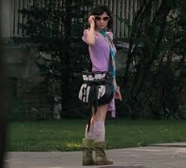

This project was born on an early morning in September 2023, after we (Annie Fu and Dana Gong) watched the incredible movie that is Watching the Detectives. We finished it around 3am, delirious from constant laughter and bewildered at what we had just seen. We loved it. We didn't understand how the movie didn't have a cult following. We were determined to kickstart said cult following on our own. Over the next few months, we fleshed out the idea for this fansite and worked on it here and there, forming a consistent throughline for our friendship.
Dana passed away in the summer of 2024, before we could finish the site.
Because true collaborators in this life are rare.
— Gabrielle Zevin, Tomorrow and Tomorrow and Tomorrow
 "an incorrigible prankster and film noir buff"
breaks up with his girlfriend citing her lack of similarity to Katherine Ross in "Butch Cassidy and the
Sundance Kid."
"an incorrigible prankster and film noir buff"
breaks up with his girlfriend citing her lack of similarity to Katherine Ross in "Butch Cassidy and the
Sundance Kid." She tells him to get over his silly little life pretending to live in the movies through running an
unprofitable video store.
In walks Violet (also our fav Lucy Liu)
She tells him to get over his silly little life pretending to live in the movies through running an
unprofitable video store.
In walks Violet (also our fav Lucy Liu)
, a modern day femme fatale who "starts to lead Neil down a road of petty crime." Curiosity killed the cat they said. But it probably wouldn't kill Neil to live in the moment, and Neil is not a cat.